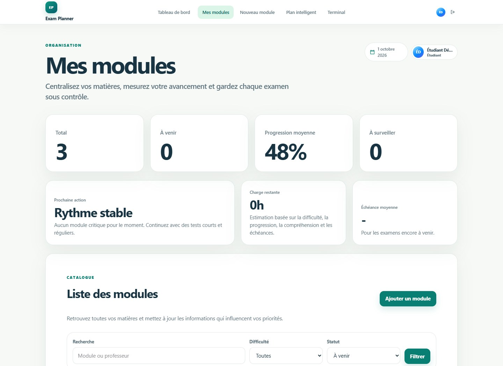
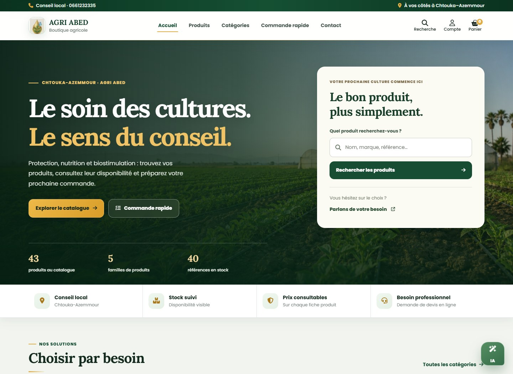
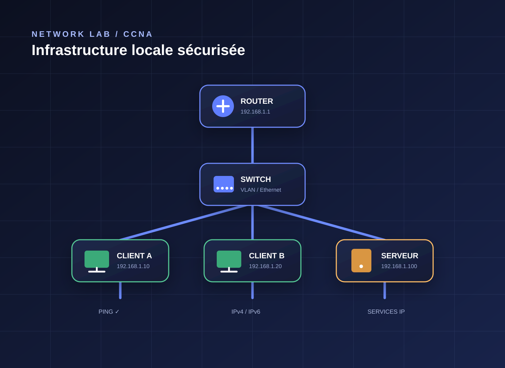

Développement & curiosité
Étudiant à l’École Supérieure de Technologie de Safi, je conçois des applications web en associant interfaces, bases de données et logique métier.
Portfolio · Safi, Maroc
Étudiant en systèmes et sécurité des réseaux
Badge Cisco · Introduction to Networks
J’apprends, je développe, j’explore. Je construis des projets utiles et fiables.
Étudiant à l’EST Safi, je conçois des applications web et approfondis les systèmes et la sécurité des réseaux.

Safi, Maroc · EST Safi
À propos
Du développement web à la sécurité des infrastructures, une même envie : comprendre et construire.
Étudiant à l’École Supérieure de Technologie de Safi, je conçois des applications web en associant interfaces, bases de données et logique métier.
Je souhaite approfondir l’administration des systèmes et la sécurité des réseaux pour mieux protéger les infrastructures informatiques.
Projets académiques, stage chez AGRI ABED et badge Cisco : je transforme chaque apprentissage en expérience concrète.
Travaux sélectionnés
Applications web, projet de stage et laboratoire réseau : le contexte, la solution et les outils utilisés pour chacun.

Application webUne application pour centraliser les examens, organiser les modules et générer un planning de révision personnalisé.

Projet de stageUne boutique agricole complète pour présenter les produits, gérer les commandes et accompagner les clients.

Projet pratiqueUne mise en pratique des fondamentaux réseau : adressage, commutation, connectivité et diagnostic.
Formation en cours
Les matières de mon parcours en génie informatique, présentées par semestre et selon mes apprentissages actuels.
Fondamentaux de l’informatique et de la programmation.
Développement, systèmes et bases des réseaux.
Programmation avancée, administration réseau et sécurité.
Axes que j’approfondis actuellement.
Compétences
Des technologies pratiquées dans mes projets, ma formation et mon parcours réseau.
Badge vérifiable
Fondamentaux réseau, adressage IPv4/IPv6, commutation LAN, connectivité, services IP et sécurité.
Interfaces et applications web dynamiques.
Conception, organisation et exploitation des données.
Configuration et diagnostic d’infrastructures locales.
Outils utilisés pour structurer et vérifier mon travail.
Parcours
Une progression construite par la pratique et l’apprentissage continu.
Diplôme obtenu au cours de l’année scolaire 2024–2025.
Programmation, développement web, bases de données, modélisation, systèmes et réseaux.
Création d’une application de gestion des examens, des modules et des plans de révision.
Validation des fondamentaux réseau, de l’adressage IP et de la commutation locale.
Réalisation d’une plateforme avec catalogue, panier, commandes, administration et assistant produit.
Contact
Une question, un projet ou une opportunité ? Échangeons.
Un projet, un stage ou une opportunité ? Je serais ravi d’échanger avec vous.
Disponible pour un stage, une alternance, un premier emploi ou une collaboration.